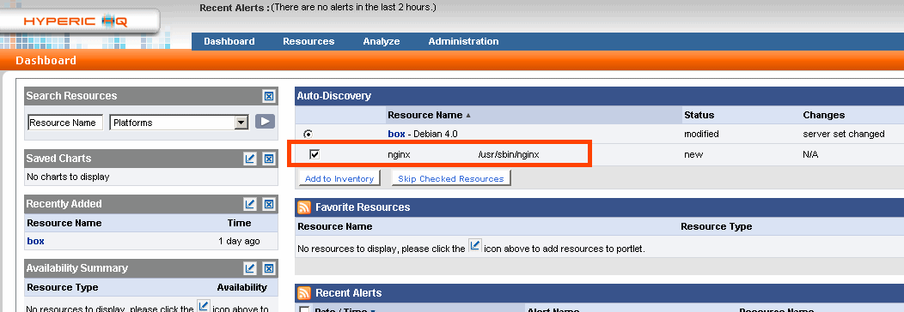
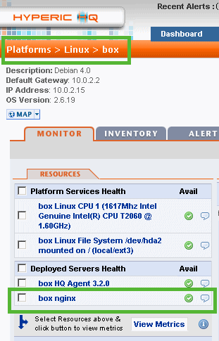
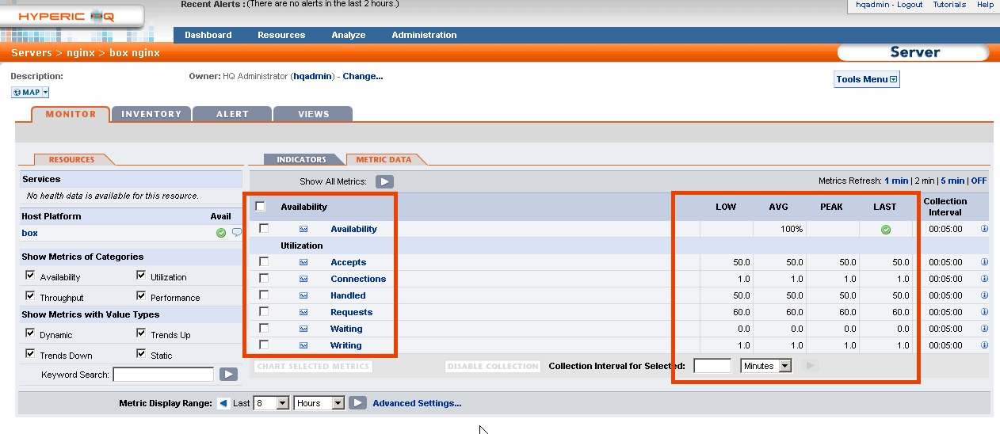
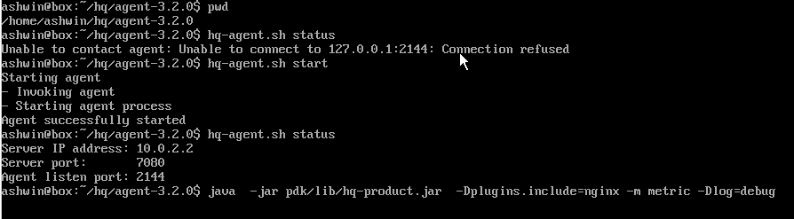

Hyperic Plugin for Nginx Server
Introduction
The
Nginx plugin will auto-discover the nginx service on the machine and
allows monitoring metrics returned by the nginx status module.
Installation
The nginx-plugin.xml file needs to be deployed on the server and all agents which need to monitor the nginx server.
Step 1: Stop the HQ Server and Agents
Step 2: Copy the plugin file to the respective plugin directory
HQ-Server: cp nginx-plugin.xml <hq installation
dir>/server-3.2.0/hq-engine/server/default/deploy/hq.ear/hq-plugins
HQ-Agent: cp nginx-plugin.xml <hq installation dir>/agent-3.2.0/pdk/plugins
Step 3: Start the HQ Server and the HQ Agents
Auto-Discovery
The agents will contact the HQ server and the nginx server should get auto-discovered. See the screenshot below.
The nginx server will not get listed immediately on HQ-server startup. Wait around 5 minutes for this to happen.

Nginx Server
The Ngnix server will be present under the respective Platform->Machine.

Metrics
Clicking
on the nginx server link will list the metrics. Again, the mertics may
not be listed immediately. Wait for around 5 minutes for this to happen.
Assumptions
- The nginx server will be running on port 80
- The status module for nginx is installed and accessible at /nginx_status URL
Troubleshooting
In
case the nginx server is not listed even after 5 minutes, there might
be some configuration error. Execute the following command to get an
idea of what the problem is:
<agent installation dir>/java -jar pdk/lib/hq-product.jar -Dplugins.include=nginx -m metric -Dlog=debug
